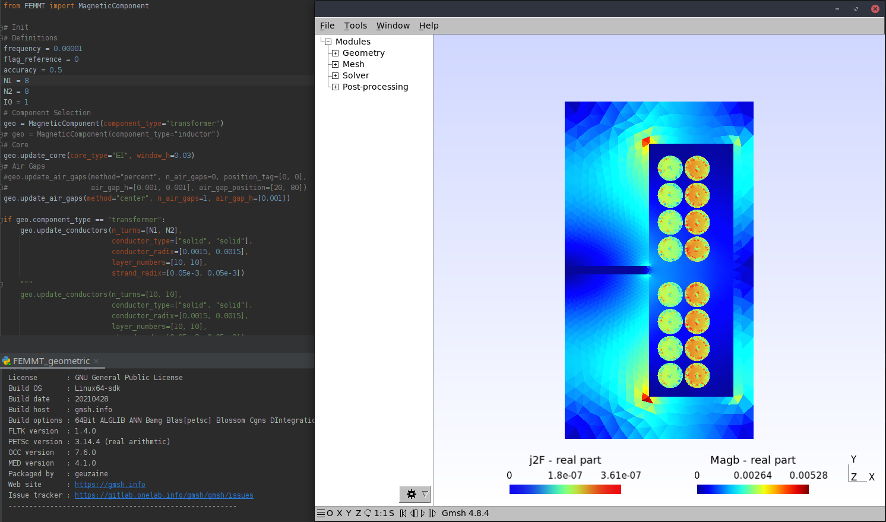

Basics of Usage
{kind=link}
How to use the FEM Magnetics Toolbox
Import the class with
from FEMMT import MagneticComponent
Create instance with for example
geo = MagneticComponent(component_type="transformer") #or
geo = MagneticComponent(component_type="inductor")
Define/Update the Core geometry with
geo.update_core(core_type="EI", window_h=0.03)
Add/Update the various air gaps with
geo.update_air_gaps(method="percent", n_air_gaps=2, position_tag=[0, 0], air_gap_h=[0.001, 0.001], air_gap_position=[20, 80]) #or
geo.update_air_gaps(method="center", n_air_gaps=1, air_gap_h=[0.002])
Define/Update conductor(s) for a transformer with
geo.update_conductors(n_turns=[8, 12], conductor_type=["solid", "solid"], conductor_radix=[0.0015, 0.001])
#or for an inductor with
geo.update_conductors(n_turns=[[14]], conductor_type=["solid"], conductor_radix=[0.0015], winding=["primary"], scheme=["square"], core_cond_isolation=[0.0005], cond_cond_isolation=[0.0001])
Start a single simulation with
geo.single_simulation(freq=100000, current=[5, 10], phi=[0, 0], skin_mesh_factor=accuracy)
Installed as a pip-package
Minimal example for a single simulation with displayed result in ONELAB:
# minimal example for installation from pip-package
import femmt as fmt
# Create Object
# geo = fmt.MagneticComponent(component_type="inductor")
geo = fmt.MagneticComponent(component_type="transformer")
# Update Geometry
geo.update_core(type="EI", window_h=0.03)
geo.air_gaps.update(method="center", n_air_gaps=1, air_gap_h=[0.001])
# geo.update_conductors(n_turns=[[14]], conductor_type=["solid"], conductor_radii=[0.0015],
# winding=["primary"], scheme=["square"],
# core_cond_isolation=[0.0005], cond_cond_isolation=[0.0001])
geo.update_conductors(n_turns=[[6, 0], [0, 6]], conductor_type=["solid", "solid"],
conductor_radii=[0.0015, 0.0015], winding=["interleaved", "interleaved"],
scheme=["horizontal", "horizontal"],
cond_cond_isolation=[0.0001, 0.0001, 0.0003], core_cond_isolation=[0.0005])
# Perform a single simulation
# geo.single_simulation(freq=1000000, current=[10])
geo.single_simulation(freq=1000000, current=[10, 10])